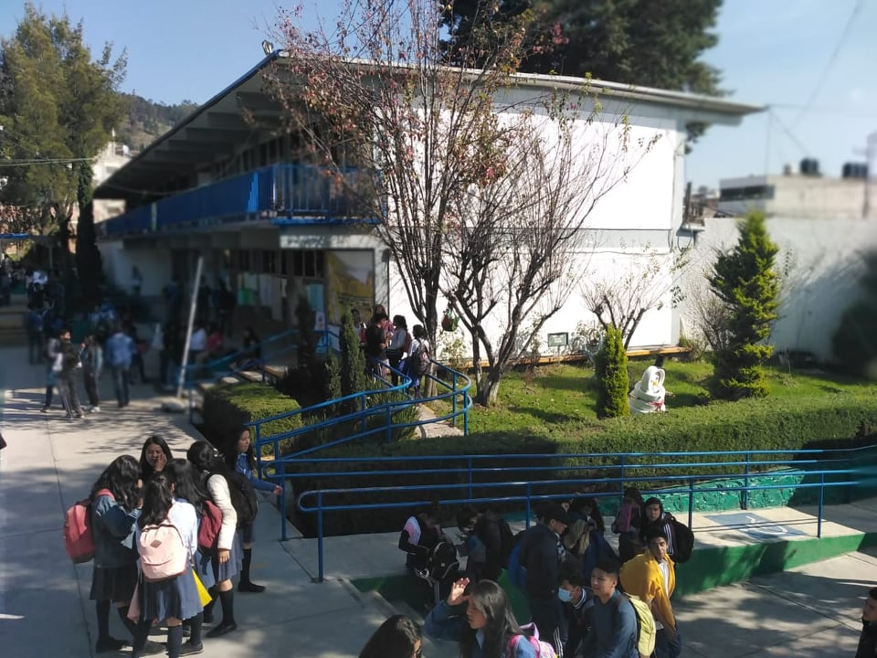

Nuestra historia

El Centro de Estudios Tecnológicos, Industrial y de Servicios No. 64 fue fundado en el mes de octubre de 1980, iniciando sus actividades, en la población de San Mateo Oxtotitlán, Toluca
En el que empezó con las carrerar Técnicas:
|
Claro después de un tiempo todo se actualizó y se obtuvieron las carreras que hoy laboran, las cuales son:
|
Y ahora se a convertido en la Institución que ahora conocemos.